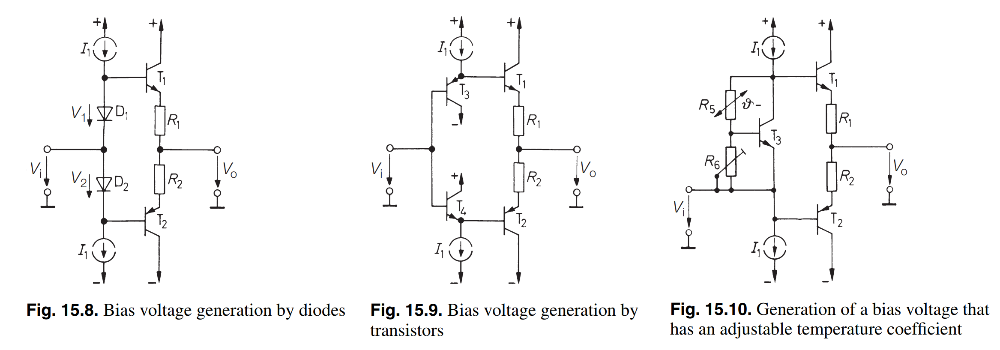
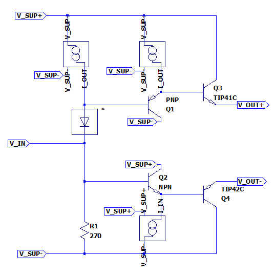
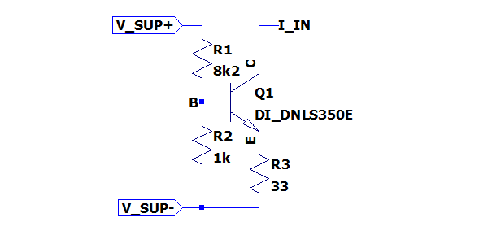
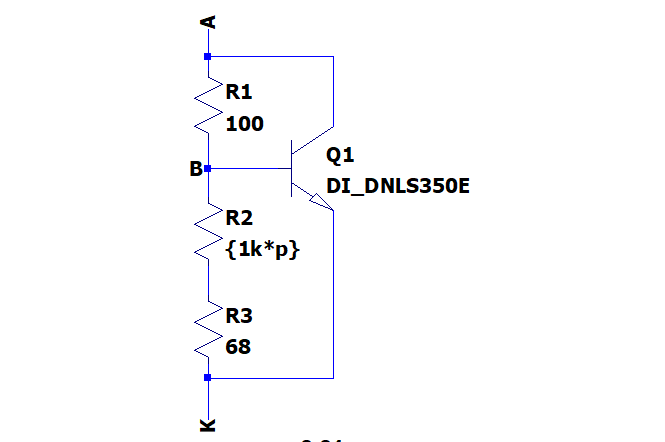

Bias Stage
Bias and driver stage for the class AB output stage of the powersupplysink.
Interface & Requirements
- Voltage Input
- Voltage Input Swing \(V_{in} \in [-2V, +6V] \subset [-3V, +8V]\)
- Input Current \(| \pm I_{in} | \leq 20mA\)
- Voltage outputs
- In phase with \(V_{in}\)
- \(V_{out-} \approx V_{in} - 0.6V + 1V = V_{in} + 0.4V\)
- \(V_{out+} \approx V_{in} + 0.6V - 1V + V_{offset} = V_{in} + V_{offset} - 0.4V\)
- \(V_{offset} \in [+0.73V, +1.8V]\) adjustable via trimmer
- Output current \(I_{out \pm} \geq \pm 800 mA\)
- Supply Voltages
- \(+10V\) @ \(7W\) (\(700mA\))
- \(-5V\) @ \(3.5W\) (\(700mA\))
Circuit Selection and Design
Literature Research for Available Options
Research in Electronic Circuits by Tietze, U. and Schenk, Ch..1 Chapter 15.2.3 Generation of Bias Voltage 1 shows the following possibilities to generate the bias voltages:

- Bias voltage generation by diodes
- symmetric
- bias voltage fixed
- low input impedance
- rubber diode / VBE multiplier might be used instead of diodes
- Bias voltage generation by transistors
- symmetric
- bias voltage fixed
- high input impedance
- rubber diode / VBE multiplier might be used additionally to increase bias voltage further to fixed value
- Generation of a bias voltage that has an adjustable temperature coefficient
- asymmetric
- adjustable bias voltage (rubber diode / VBE multiplier)
- temperature compensation possible
- low input impedance
To reduce the required currents before the output current a transistor in common collector circuit is used to reduced to boost the output current. Possibly higher thermal dissipation is expected. The current boost transistors can be driven by a circuit similar to (2.) with a high input impedance. To achieve additional and adjustable offset voltage a stage of (3.) can be preceded. With the modification of replacing the lower current source of (3.) with a resistor an approximate idle point can be set avoiding extreme outputs with high impedance input.
Overview

Overview of the used circuit.
Current Boost Transistors
The Transistors \(Q_3\) and \(Q_4\) are referred to as the current boost transistors and to reuse parts it is desired to reuse the already used parts TIP41C and TIP42C from the outstage.
The critical condition of the current boost transistors is the dissipated power. The maximum power is estimated in the worst case by a short connection of the output through the outstage to the other voltage rail with maximum bias current. Therefore the power will be $$ P = U I = 10V 0.5A = 5W $$ Thus a heatsink with thermal resistance of \(R_{th} < 15 K/W\) is required, which can potentially be shared between the two transistors as they will not dissipate the maximum power at the same time.
Current Source Lowside

The required output current is approximately \(500mA\), by \(Q_4\) in the overview image the current is boosted and there fore a smaller base current of \(Q_4\) is required. For a guaranteed \(\beta_0 \ge 40\) of the transistors the base current is \(Q_{B4} = 500mA / 40 = 12.5mA\). To drive the transistor \(Q_2\) even at high current demand with a forward current through the collector emitter path the current source is constructed to have $$ I_{src} = 2 \cdot Q_{B4} = 25mA $$ To achieve the maximum voltage swing at the output with an \(VBE_{Q4} \approx 1V\) the current source shall require only approximately \(U_{src,min} = - U_{sup-} + U_{out,min} + VBE_{Q4} = +5V -3V -1V = 1V\) of voltage drop to function.
When neglecting the collector emitter voltage of the current limiting transistor the resistor \(R_{3}\) can be calculated as follows to allow operation with a voltage lower than \(U_{src,min}\): $$ R_{3} \lessapprox \frac{U_{src,min}}{I_{src}} \approx 47 \Omega $$ Trough simulation and optimization of the resistor value \(R_3\) is determined as: $$ R_{3} = 33 \Omega $$
By using \(VBE\) of the current limiting transistor the required base voltage of the transistor can be set by a voltage divider with a total current of approximately \(2.5 mA\) for a negligible influence of the required base current as: $$ R_1 = 8.2k \Omega \quad \land \quad R_2 = 1k \Omega $$
Current Source Highside
The highside current source is designed complementary to the lowside current source and for the slighty changed VBE of the complementary transistor the voltage divider is calculated as: $$ R_1 = 8.2k \Omega \quad \land \quad R_2 = 1.2k \Omega $$
Transistor Biasing
The biasing transistors \(Q_1\) and \(Q_2\) of the overview image can be reused from the outstage as well. The cheaper and smaller SMD transistors DNLS350E and DPLS350E can be chosen, as the maximum expected power is below $$ P < (U_{SUP+} - U_{SUP-}) \cdot I_{src} = 375 mW $$
Operational Point for High Impedance Input
\(R_1\) in the overview image controls the operational point, when no input voltage is supplied. For the current \(25mA\) of the current source and a desired voltage \(U_{R1} = 2V\), which will approximately bias the output symmetrically around \(2.5V\) the resistor is calculated: $$ R1 = \frac{U_{R1} - U_{sup-}}{I_{src}} = \frac{2V - (-5V)}{25mA} \approx 270 \Omega $$
Rubber Diode / VBE Multiplier

The rubber diode shall be ajustable from VBE of the transistor to approximately \(1.8V\). Therefore a trimmer is selected to adjust the voltage drop. To avoid excessive voltage drop in case of mechanical failure in the trimmer \(R_2\) is chosen to be adjustable. For the two failure cases the following holds:
- \(R_2 \to \infty\) the voltage drop of the rubber diode is reduced to the intrinsic VBE of the transistor.
- \(R_2 = 0 \Omega\) the voltage increases up to \(v = \frac{U_{dropoff}}{VBE} = \frac{R_1}{R_3} + 1\). Therefore by chosing \(R_3\) the maximum dropoff voltage can be set. At the cost of not being able to reach as low as VBE during normal operation.
By reusing the transistor DNLS350E from the outstage with \(VBE(I_C=25mA) \approx 730mV\) the interval required for \(v\) can be estimated. To achieve \(v \in [1.1, 2.5]\), with an \(R_2 = 1k \Omega\) trimmer the following equations can be used to derive the values for the resistors: $$ v_{max} = 2.5 = \frac{R_1}{R_{2,min} + R_3} + 1 $$ $$ v_{min} = 1.1 = \frac{R_1}{R_{2,max} + R_3} + 1 $$ $$ R_{2,max} = 1k \Omega \quad \land \quad R_{2,min} = 0 \Omega $$ $$ \implies R_1 \approx 100 \Omega \quad \land \quad R_3 \approx 68 \Omega $$
Which satisfies:
- \(I_{R2,max} \approx \frac{VBE}{R_{2,min} + R_3} = 10.7mA < 25mA\), which allows the transistor to stay in forward mode.
- \(I_{R2,min} \approx \frac{VBE}{R_{2,max} + R_3} = 680 \mu A < 25mA\), which allows at the maximum offset voltage to still supply enough current to the base of the transistor.
Component Selection
Current Boost Transistors
Current Boost Transistors Heatsink
Mouser Search: \(R_{th} < 15 K/W\) (natural convection), In Stock, Sort by Price
- 2x 575002B00000G Heatsink, Boardlevel
- 2x A15037106 Phase Change Thermal Conductor
- 2x Screw M3
- 2x Spring Washer M3
- 2x Nut M3
Current Sources
- 3x RC1210FR-078K2L, 8k2 1210
- 1x RC1210FR-071KL, 1k 1210
- 2x RC1210FR-071K2L, 1k2 1210
- 3x RC1210FR-0733RL, 33 1210
- 1x DNLS350, NPN SOT223
- 2x DPLS350, PNP SOT223
Biasing Transistors
Operational Point Setting Resistor
- 1x RC1210FR-07270RL, 270 1210
Rubber Diode / VBE Multiplier
- 1x DNLS350, NPN SOT223
- 1x RC1210FR-07680RL, 680 1210
- 1x PVG5H102C03B00, 1k Trimmer
Simulation
See ./*.asc files. Simulations available for:
- current source highside
- current source lowside
- rubber diode
- bias circuit
Hardware tests in Laboratory
Layout and Assembly Considerations
- Heatsink for current boost transistors can be shared.
- Add testpin for input and output
- Add disconnect option for input and outputs (solder bridge / jumper)
Commissioning and Testing
Transfer Characteristic
Test ID: v1.0.1/pss/power-electronics/bias/transfer/<suffix>
- Connect
- -2V (test id suffix:
-2V)- Input \(U_{IN} = -2V\)
- 2V (test id suffix:
+2V)- Input \(U_{IN} = 2V\)
- 6V (test id suffix:
+6V)- Input \(U_{IN} = 6V\)
- -2V (test id suffix:
- Turn offset trimmer to \(R = 1k \Omega\), verify by measurement
- Power on supply voltage
- Measure Voltages
- Negative output voltage
- Voltage at negative output \(U_{out-}\)
- Positive output voltage
- Voltage at positive output \(U_{out+}\)
- Negative output voltage
- Power off supply voltage
- Test passed if
- \(U_{IN} - 1V < U_{out-} < U_{IN} + 0.5V\)
- \(U_{IN} + 0.5V < U_{out+} < U_{IN} + 2V\)
Offset Adjustment
Test ID: v1.0.1/pss/power-electronics/bias/offset-adjust/<suffix>
- Connect
- Input \(U_{IN} = 2V\)
- Turn offset trimmer to \(R = 0 \Omega\), verify by measurement
- Power on supply voltage
- Measure Output Voltages
- Voltage at negative output \(U_{out-,0}\)
- Voltage at positive output \(U_{out+,0}\)
- Turn offset trimmer to \(R = 1k \Omega\)
- Measure Output Voltages
- Voltage at negative output \(U_{out-,1}\)
- Voltage at positive output \(U_{out+,1}\)
- Power off supply voltage
- Test passed if
- Let \(U_{offset,0} = U_{out+,0} - U_{out-,0}\)
- Let \(U_{offset,1} = U_{out+,1} - U_{out-,1}\)
- \(U_{offset,0} - 0.5V > U_{offset,1} > U_{offset,0} - 1.5V\)